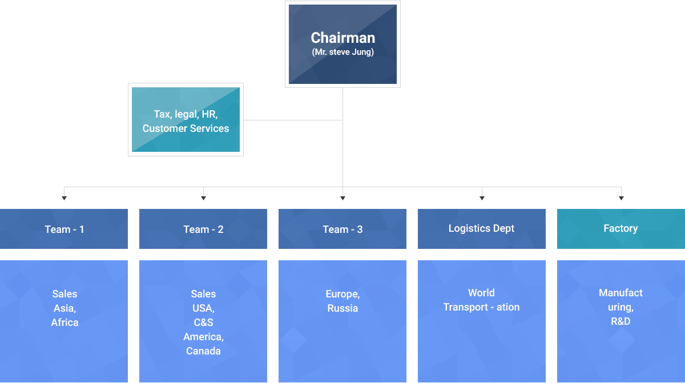

Manufacturer and Exporter of Mineral Industry Facilities
Company in Brief – Organization chart
Company in Brief – Organization chart
Why Dry Concentrator?
We invented Dry Type Ore Concentration Apparatus Using Gravity which is innovative equipment for separating between minerals and gangues by suction air and gravity after
crushing ore containing minerals and grinding fine grinding.Metallic minerals can become to use in the various industries after having processes in crushing, mineral dressing and
smelting. Most natural minerals are chemically bonded, and there are more impurities called gangue than what we need pure. For instance, precious metals such as gold and silver
have the content of impurities exceeds 99% and in case of copper contents 95% of impurities. In the ore, the proportion of how many useful pure minerals are contained is called a
quality grade, and it is expressed as a percentage and used to compare how much the ore is worth.The mineral dressing is the processing of removing gangues from ore which is a
technique to extract purity by extracting mineral element, and it is the essential and absolute process. After this process, it can be sent to a smelting factory with reducing freight
costs and it volume.One of popular flotation is now used with the gravity(weight) differences of mineral particles. For example, when it is defined as “1” in the criteria of 4 centigrade
degree of water, the gravity of metallic mineral will be Au 19.30, Ag 10.5, Fe 7.9, Cu 9.0, Ni 8.9 and W 19.3. In a while, the waste tailings are 1.8 in the gravity which is very relatively
light compared to the metallic mineral.So, after grinding mined ores, it has been selected to get fine grinding, it has been dressed in the mineral particles and tailings with using the
gravity difference. It is called gravity selection.As a selection technology by gravity method, conventional technology has been used the gravity method of water from the past time.
With this kind of water gravity, flotation has been used in a wide. The flotation method is that by using adhesiveness to the surface of froth, mineral particles are selected from the
pulp with adding chemical reagents and handing around for a froth rising. But with the water floatation by using much water, causes environmental problem in putting chemical
reagents, the limitation of water supply in the winter season, it has been yet used without any alternative even if it includes some problems in costs to install and operate, securing
space and high cost labors employment in a economic and non-economic parts.Meanwhile, there has been various attempts such as dry type concentrating method using wind
power to solve this conventional flotation cell’s problems. However, there are still a lot of dust, other environmental issues and no guarantees the ore quality.
To solve these problems, the dry type ore concentration equipment can divide between minerals and gangues by suction air and gravity after crushing ore containing minerals and
grinding fine grinding. Since the specific gravity of ore, the light gangue is sucked by suction pressure together with the air and heavy mineral powder is dropped by free fall.
Therefore, there is no pollution such as water contamination and dust and all operating without any weather conditions, economic and no spacious.
Specification
Standard Coal Crusher for Power Plant